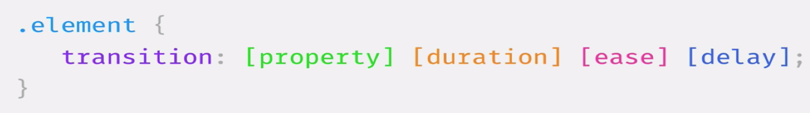

Topic 11
Designing, Defining, and Triggering CSS3 Transitions without Custom Libraries

transition-propery: define what propery to apply effect
transition duration: define the duration of a transition.
transition-timing-function: define a funciton that specifies transition animation speed
- Ease: slow start, then fast, then end slow.
- Linear: same speed start to end.
- Ease-in: slow start.
- Ease-out: slow end.
- Ease-in-out: slow start and end.
transition-delay: define a length of time to delay a start of a transition.
HTML and CSS create this hover transition:
Hover transition to grow the square and change color:
inflate!
rotate square timing with
cubic-bezier:
use developers tools for cubic-bezier or:
cubic-bezier site